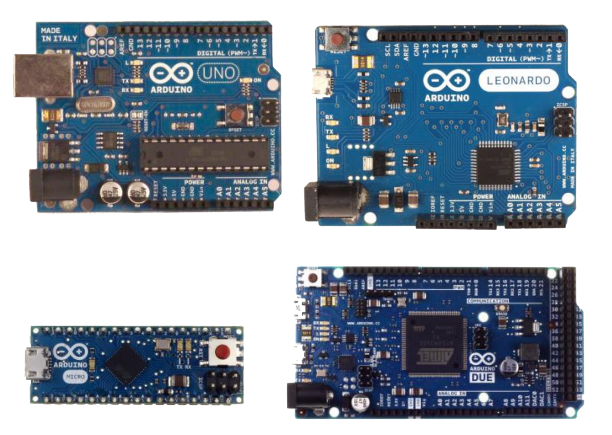
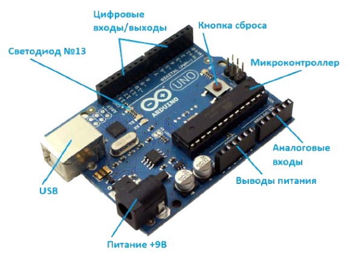

Arduino — это электронный конструктор и удобная платформа быстрой разработки электронных устройств для новичков и профессионалов. Платформа пользуется огромной популярностью во всем мире благодаря удобству и простоте языка программирования, а также открытой архитектуре и программному коду. Устройство программируется через USB без использования программаторов.
Микроконтроллер на плате программируется при помощи языка Arduino (основан на языках Си и С++) и собственной среды разработки, которая доступна для бесплатного скачивания. Проекты устройств, основанные на Arduino, могут работать самостоятельно, либо же взаимодействовать с программным обеспечением на компьютере. Платы могут быть собраны пользователем самостоятельно или куплены уже в сборе, причем исходные чертежи схем являются общедоступными, пользователи могут применять их по своему усмотрению.

Рис. 5: Примеры плат Arduino
В настоящее время выпущено несколько плат из серии Arduino, некоторые из которых изображены на Рис. 5. В данном учебном пособии мы будем использовать Arduino Uno, но рассматриваемые примеры должны заработать на любой из них, с учетом некоторых особенностей использования выводов у разных плат, о которых будет рассказано позже.
Большинство плат Arduino построены на 8-битных микроконтроллерах фирмы Atmel. Процессоры работают на тактовой частоте 16 MHz. Платы содержат все необходимые для работы микроконтроллера компоненты, включая схемы питания и кварцевый резонатор. Рабочее напряжение в большинстве случаев 5 вольт. Программирование микроконтроллера можно осуществлять, просто подключив его к компьютеру через порт USB. На плате есть разъемы, позволяющие подключать внешние схемы к большинству выходов микроконтроллера. Эти разъемы позволяют использовать цифровые и аналоговые входы и выходы, ШИМ генераторы, различные цифровые интерфейсы. Для Arduino выпускается множество плат расширения, которые позволяют использовать плату как основу для управления роботами, подключаться к компьютерным сетям через Ethernet или Wi-Fi, превращать ее в цифровой фотоаппарат и так далее. Так как среда Arduino очень популярна, то многие разработчики микроконтроллеров делают свои платы, совместимыми с ней. Это позволит применить навыки, полученные при работе с Arduino, с другими, в том числе гораздо более мощными микроконтроллерами.

Рис. 6: Плата Arduino Uno
Плата Arduino Uno, изображенная на Рис. 6, построена на базе микроконтроллера ATmega328. Платформа имеет 14 цифровых входов/выходов (6 из которых могут использоваться как выходы ШИМ), 6 аналоговых входов, кварцевый генератор 16 МГц, разъем USB, разъем питания, разъем для программатора (ICSP) и кнопку перезагрузки. Для того, чтобы она заработала, ее необходимо подключить к компьютеру посредством кабеля USB, либо подать питание при помощи адаптера AC/DC или батареи.